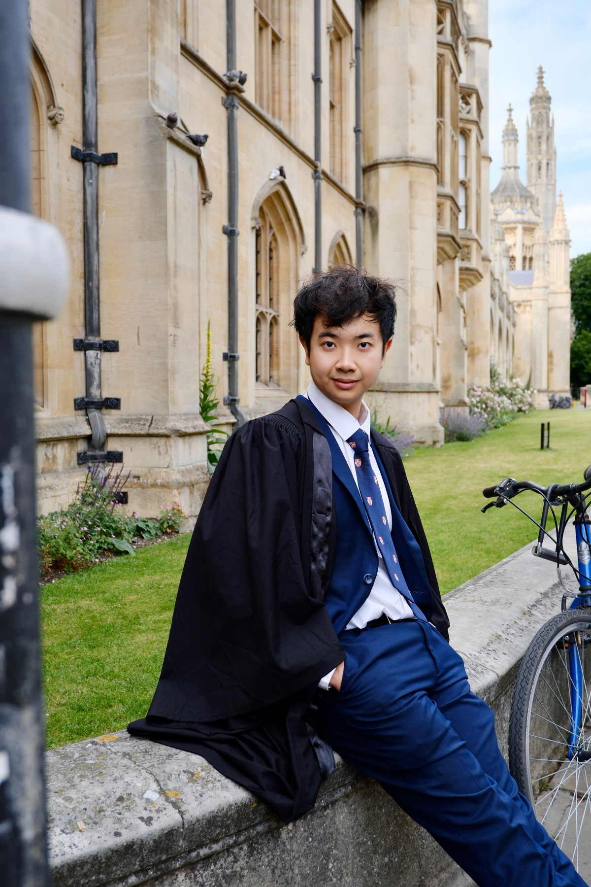
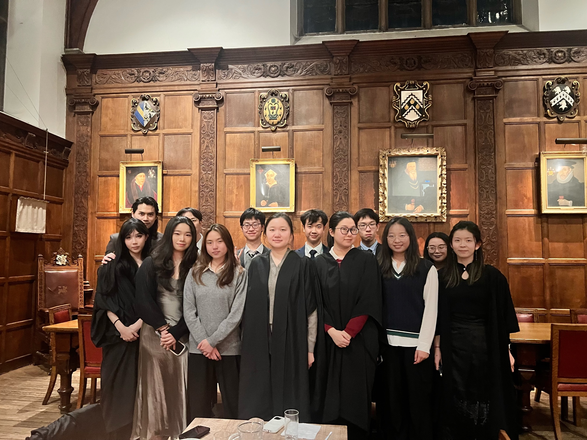

Record 01 Origin

Xiang Zhang (Simon)
Founder and Founding President
2025–2026
Biographical note to be supplied by the committee.

Founded in Cambridge 2025
Formal halls. Enduring conversations. A community across colleges.
I About the Society
The Formal Hall Networking Society was created to turn formal halls into spaces for cross-college friendship, intellectual conversation, interdisciplinary exchange, meaningful professional connection and lasting community.
Networking here means relationship-building: meeting beyond familiar circles, listening with curiosity and allowing ideas and friendships to develop through conversation. The table is not a transaction, but a setting in which people can come to know one another.
II The Founding Chapter
The 2025–2026 academic year forms the society’s founding chapter. It developed through formal halls, interdisciplinary discussions, cross-college gatherings and the relationships formed around shared tables.
This record preserves that beginning without overstating it. The archive below includes only the dates and details that can currently be confirmed.
III Founders and Leadership
The leadership record distinguishes the founding presidency from the society’s next academic year, preserving both its origin and its continuity.
Record 01 Origin

Founder and Founding President
2025–2026
Biographical note to be supplied by the committee.
Record 02 Continuity
Co-Founder
President, 2026–2027
Biographical note to be supplied by the committee.
IV The Founding Year Archive
Events are recorded chronologically. Only confirmed dates, titles, venues, themes and guests are included.
Archive entry 01
A Diwali formal at Hughes Hall, recorded as the opening event in the founding-year archive.

Archive entry 02
A networking formal at Hughes Hall.

Archive entry 03
A networking formal at Gonville and Caius College.

Archive entry 04
A formal held at Lucy Cavendish College during the founding year.

Archive entry 05
The founding year’s thank-you formal at Hughes Hall, under the theme From Ideas to Influence.

V Institutional Continuity
The society is intended to preserve continuity across academic years while allowing each committee to steward its own chapter with care.
2025–2026
Founder and Founding President
2026–2027
Co-Founder · President
VI Membership
Membership is intended primarily for Cambridge students interested in formal hall culture, cross-college friendship and thoughtful conversation. The existing mailing list carries current event announcements and any application details.
After subscribing, complete any email confirmation requested by the list service. Event access, registration forms, guest arrangements and dress requirements can vary by venue; follow each announcement and treat venue staff and fellow guests with respect.
VII Contact
For membership and general society enquiries, use the contact details already maintained by the society.